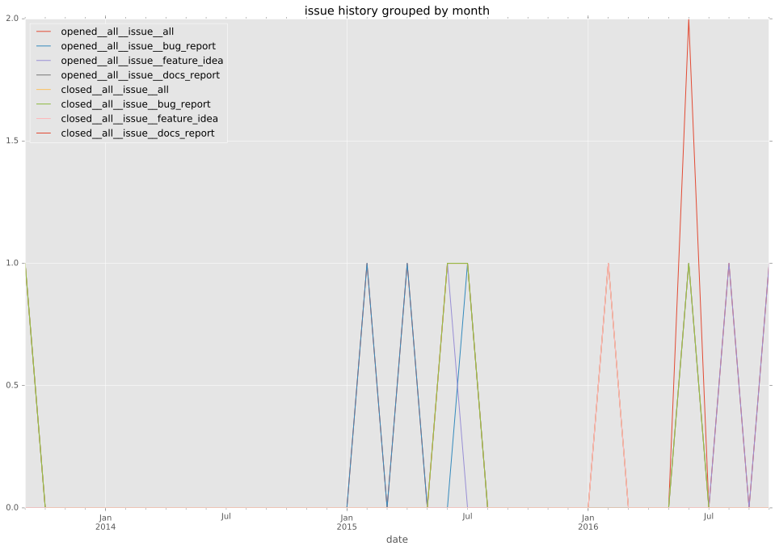
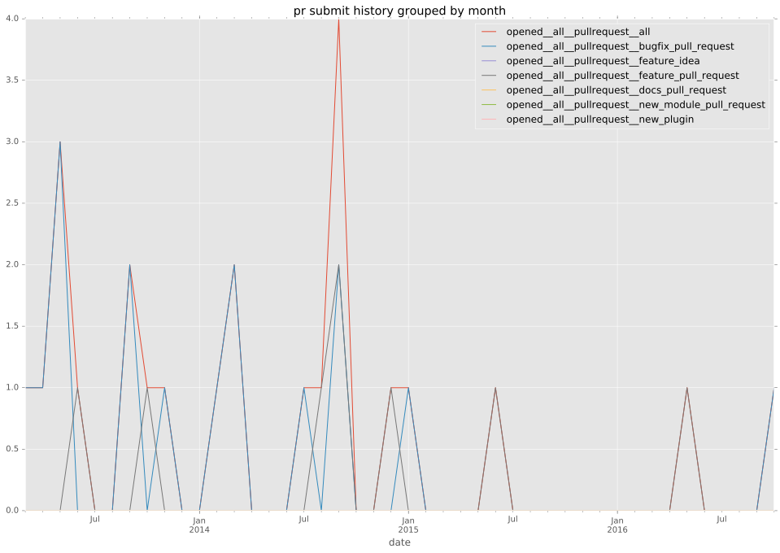

authors
- b6d
maintainers
- b6d
contributors
- b6d : 45 commits
- drob : 16 commits
- abadger : 10 commits
- jpmens : 9 commits
- mscherer : 4 commits
- abompard : 4 commits
- mpdehaan : 2 commits
- johaness : 2 commits
- jctanner : 2 commits
- ToBeReplaced : 1 commits
total issue counts
feature pull request: 7
pullrequest: 23
bugfix pull request: 16
feature idea: 3
issue: 9
bug report: 6
issue history

pullrequest history

days open by issue type
bugfix pull request
count: 22
std: 15.6970783396
min: 0
max: 74
median: 0.0
mean: 4.27272727273
all
count: 38
std: 95.7138486586
min: 0
max: 577
median: 0.0
mean: 25.6842105263
pullrequest
count: 0
std: nan
min: nan
max: nan
median: nan
mean: nan
feature pull request
count: 11
std: 170.676940979
min: 0
max: 577
median: 2.0
mean: 67.7272727273
feature idea
count: 0
std: nan
min: nan
max: nan
median: nan
mean: nan
issue
count: 0
std: nan
min: nan
max: nan
median: nan
mean: nan
bug report
count: 5
std: 56.8709064461
min: 0
max: 129
median: 1.0
mean: 27.4
closures grouped by total days open